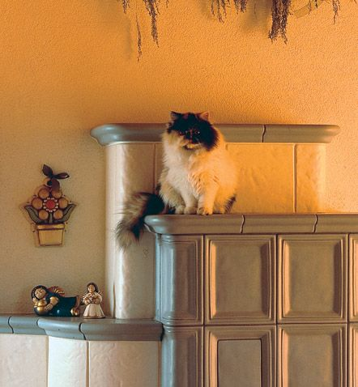
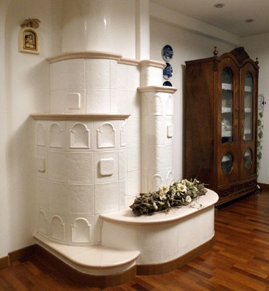
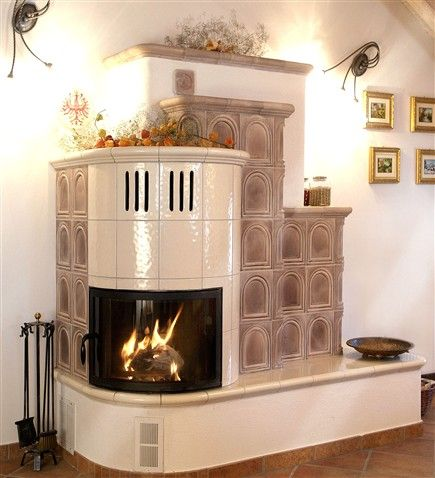
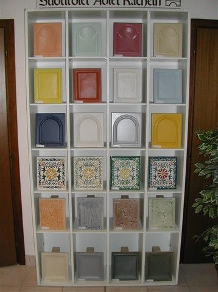

Rigatti
stufe in maiolicadal 1860, Riva del Garda
Tre generazioni che dedicano ancora oggi la vita alle stufe in maiolica. Le maioliche le facciamo qui: argilla negli stampi in gesso, smalto, forno. Poi la stufa si disegna su misura e si posa a casa vostra.
Le stufe
Posate in opera, cioè costruite pezzo per pezzo dove staranno, oppure modulari, costruite a moduli in ditta e poi montate a casa vostra. Le vedete nell'esposizione di Loc. Baltera.
- Posate in operaclassiche, rustiche, moderne
- Classichecome il modello 444
- Rustichecome il modello 901
- Modernecome la Kamm vetri

- Modularifatte a moduli in ditta
- Piccole e grandi classiche
- Raffinate
- Angolari
- Ventilate

- Cucinea legna: «Cucine Rigatti» è un nostro marchio

Una stufa in maiolica non costa, vale.
- 85-92%di resa energetica
- 15-20 kgdi legna al giorno
- pianoaccumula e cede lentamente il calore, senza seccare l'aria
- su misuraogni stufa è fatta per la sua stanza

Le maioliche
I modelli di maiolica disponibili, da vedere dal vero in esposizione:
- Kachelsystem
- Batik
- Rahmen
- Struktur
- Stil
- Wind
- Gold
- Sonne
- Mond
- Himmel
- Raphia
- Impero
Produzione ed esposizione stufe
Loc. Baltera 10, 38066 Riva del Garda (TN)
Tel. 0464 552548
Mattina 8.00 · 12.00
Pomeriggio 14.00 · 18.00/19.00
Punto vendita
Viale Dante 61, 38066 Riva del Garda (TN)
Tel. 0464 557204
Email info@rigatti.com
Per il rivenditore più vicino a voi chiamate la sede di Loc. Baltera.